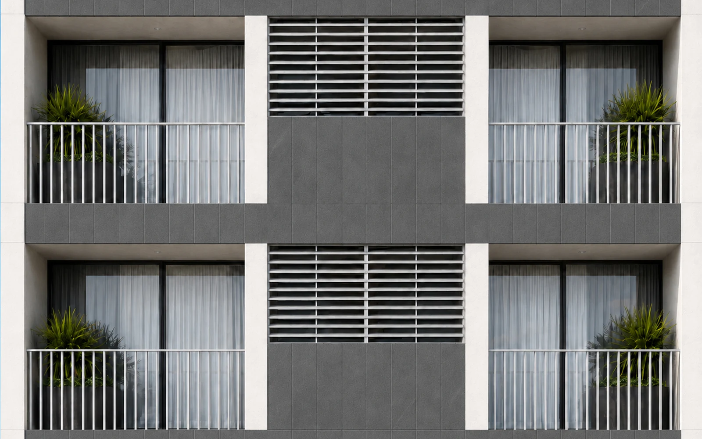
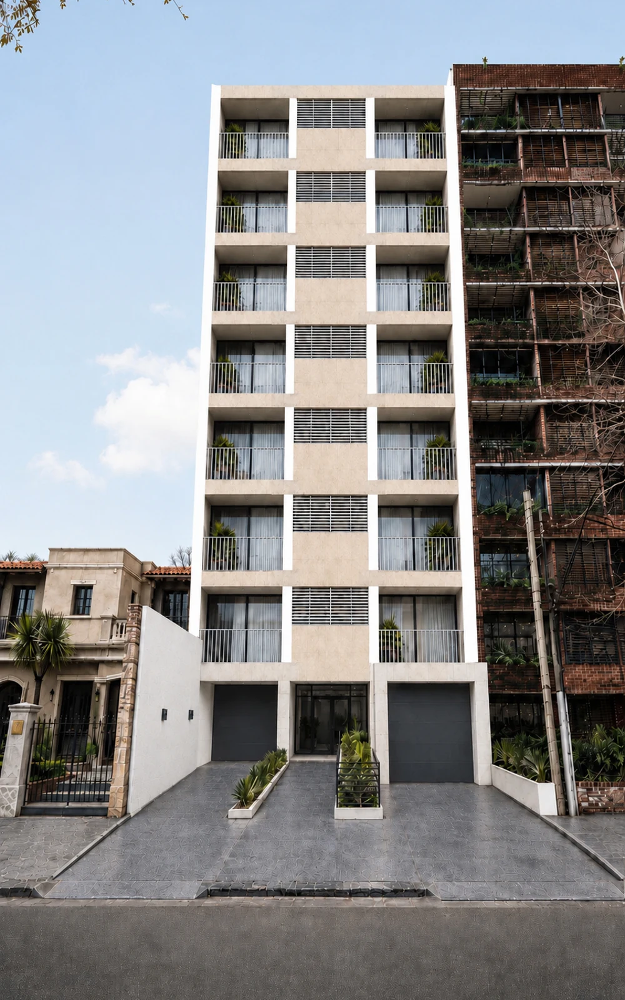
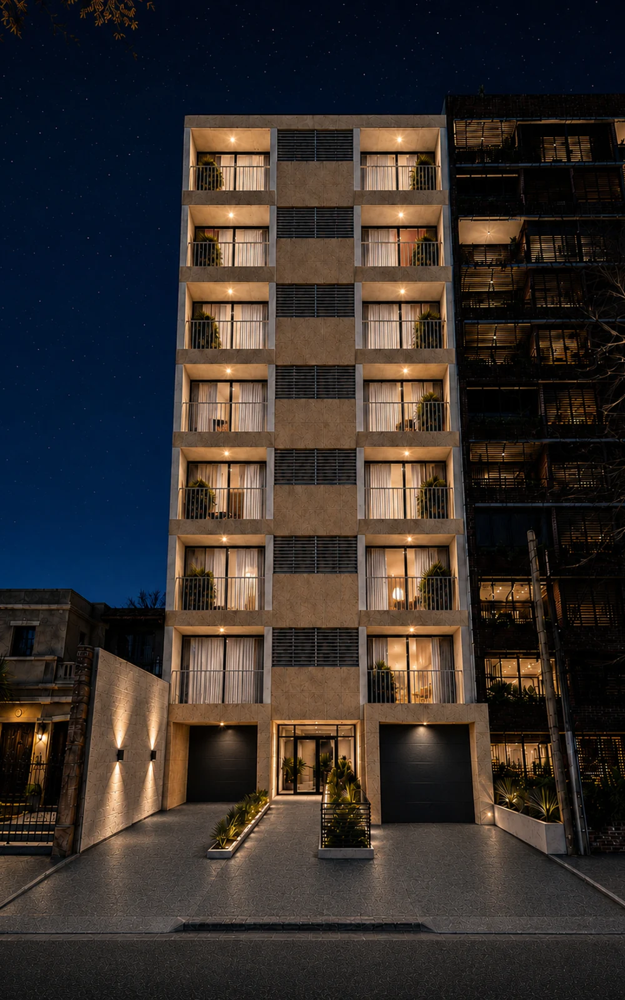
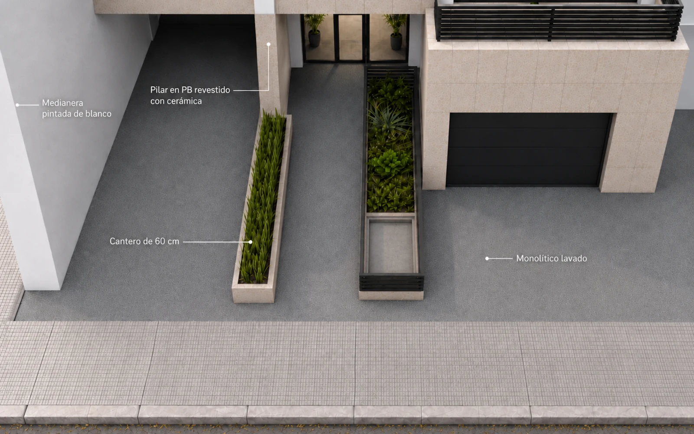

02 / PROYECTO
Araruama
Renovación de la fachada de un edificio residencial en Punta Carretas.
El proyecto plantea la renovación de la fachada de un edificio residencial construido en la década de 1970, ubicado en Punta Carretas.
Junto con los propietarios se trabajó en la definición de una nueva imagen para actualizar el edificio y mejorar su presencia urbana, respetando al mismo tiempo sus proporciones y características existentes. Actualmente, el proyecto se encuentra en etapa de desarrollo de la documentación ejecutiva, previa al inicio de la obra.


